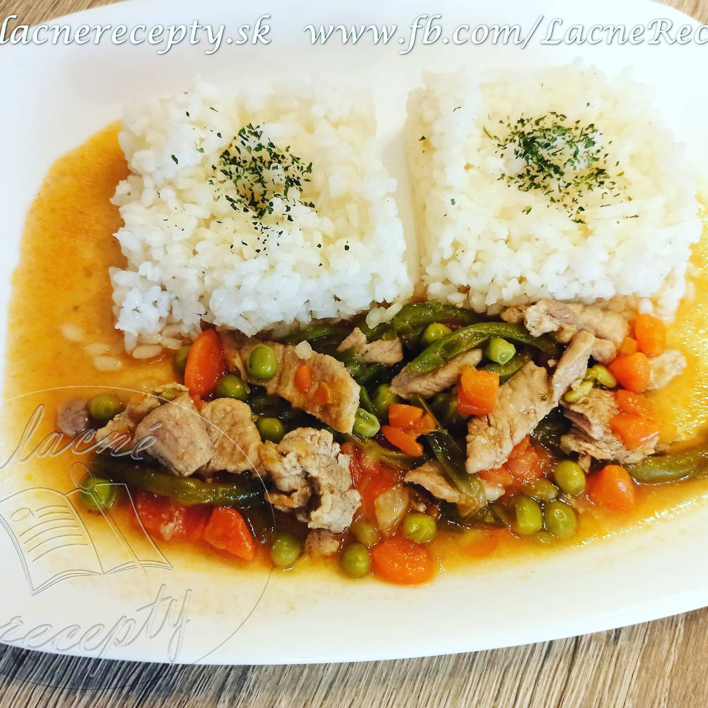

Bravčové mäso podľa @lacnerecepty — Normy Jedál
Ahojte, posielam vám jeden tip (top☑️) recept na tento týždeň 🙂♥️. Je to ľahké, lacné, fajnové a ... však vyskúšajte, priatelia 👇😏
https://www.lacnerecepty.sk/recept/bravcove-maso-na-zelenine #slovenskakuchyna #slovakia #bravcovemaso #ryza #zelenina #stavnate #lacnerecepty #jednoducherecepty #prezaciatocnikov